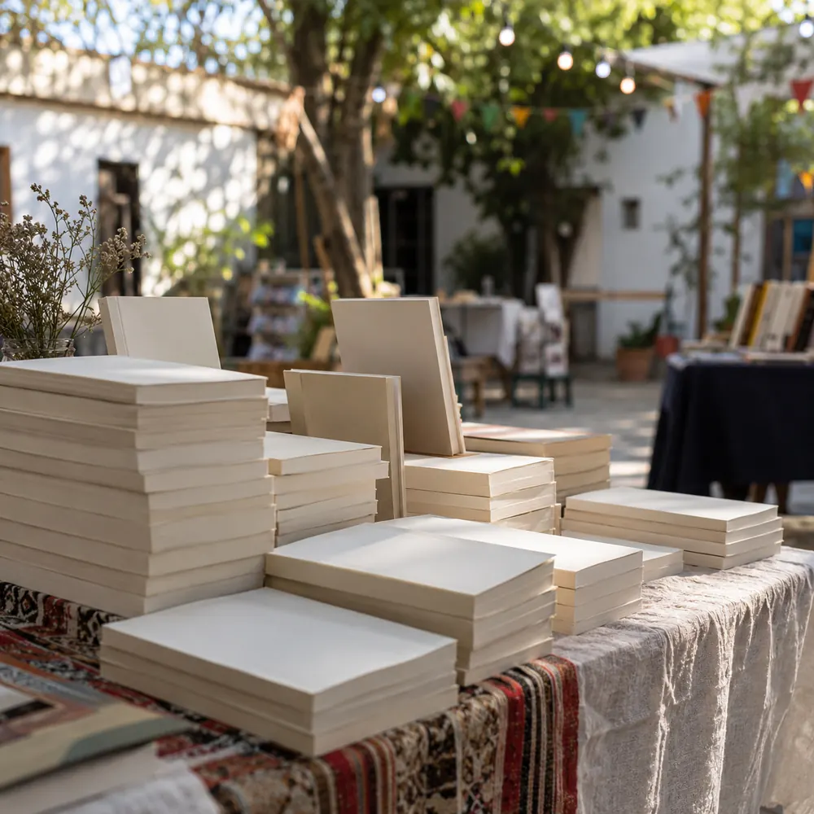
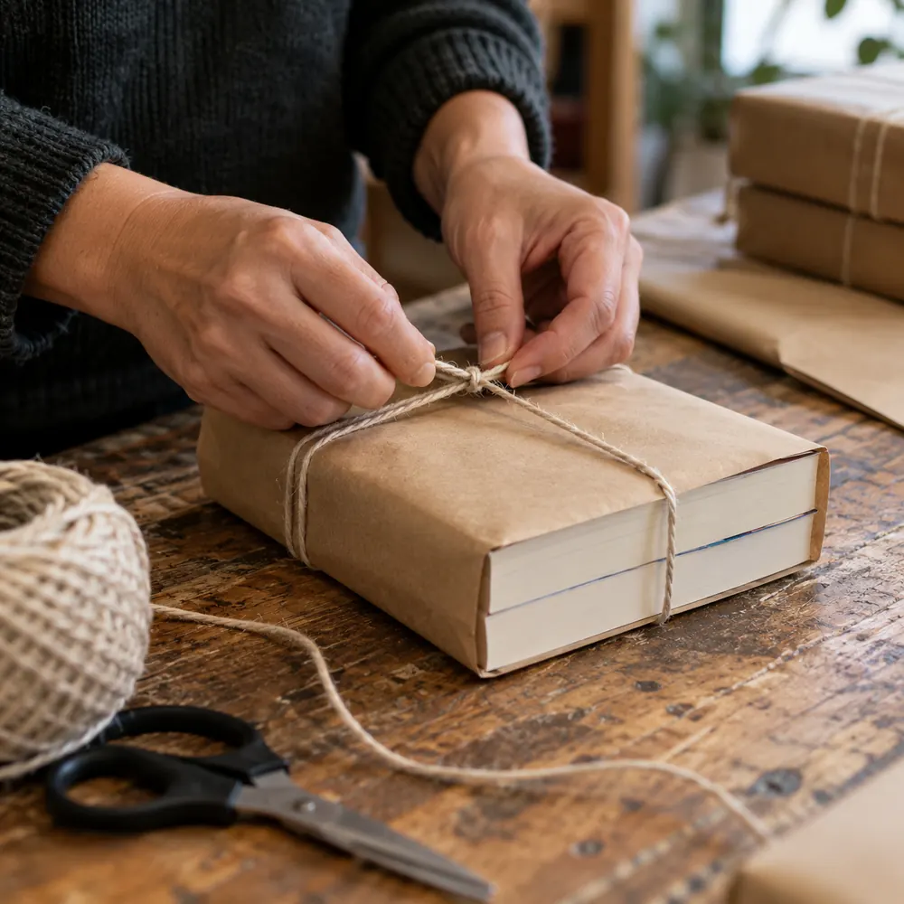

01
Gestión literaria
Leemos tu manuscrito y te acompañamos en cada decisión: qué ajustar, cómo presentarlo y qué camino editorial le conviene.
- Lectura y devolución del manuscrito
- Corrección y edición del texto
- Acompañamiento de principio a fin
«Tu historia merece ser leída»
Una editorial independiente para acompañar y difundir nuevas voces: gestión literaria, edición y difusión en un mismo lugar.
4 años de experiencia · 15 libros editados

Galería · 15 títulos
Tocá una tapa para ver su ficha y consultar por ese libro.
Portadas originales: se incorporan con los archivos de la editorial.
La editorial
Somos una editorial independiente con cuatro años en el mercado. Ofrecemos facilidades y experiencia en la gestión literaria para que cada libro salga bien hecho y llegue a quien tiene que leerlo.
Servicios
01
Leemos tu manuscrito y te acompañamos en cada decisión: qué ajustar, cómo presentarlo y qué camino editorial le conviene.
02
Del archivo al libro terminado: diseño de tapa e interior, revisión final y producción de la edición.

03
Que el libro circule y encuentre a sus lectores: presentaciones, ferias y redes.
Paso a paso
01
Por WhatsApp nos contás de qué se trata tu libro y en qué etapa está.
02
Te damos una devolución y te proponemos el camino que mejor le queda.
03
Corrección, diseño de tapa e interior, e impresión de la edición.
04
Presentación, ferias y redes para que llegue a sus lectores.

Contanos tu proyecto y te respondemos por WhatsApp.
Galería de libros editados
Libro Nº 01
Consultanos por este libro: disponibilidad, presentaciones y cómo conseguirlo.
Consultar por el Nº 01